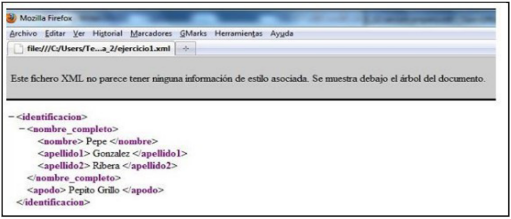
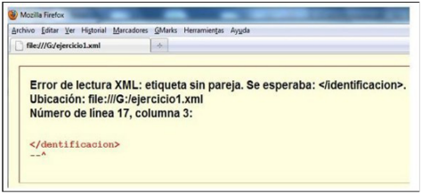
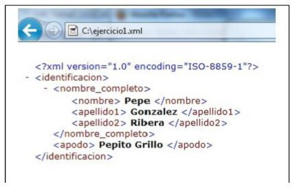
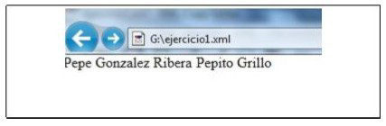

UD 2.2 XML
1 UD 2. LLENGUATGES PER A EMMAGATZEMATGE I TRANSMISSIÓ D’INFORMACIÓ. XML
1.1 INTRODUCCIÓ. XML
XML, de l’anglès eXtensible Markup Language («llenguatge de marques extensible»), és un metallenguatge extensible, d’etiquetes, desenvolupat pel World Wide Web Consortium (W3C). És una simplificació i adaptació de SGML, i permet de definir la gramàtica de llenguatges específics (de la mateixa manera que HTML és, alhora, un llenguatge definit per SGML).
XML no és realment un llenguatge en particular, sinó una manera de definir llenguatges per a diferents necessitats. Es proposa com un estàndard per a l’intercanvi d’informació estructurada entre diferents plataformes. Es pot utilitzar per a bases de dades, editors de text, fulls de càlcul i per moltes altres aplicacions diverses.
En crear XML es van plantejar aquests objectius:
- Devia ser similar a HTML (de fet es basa en el llenguatge SGML base per al format HTML)
- Devia ser extensible, és a dir que sigui possible afegir-ne de noves etiquetes sense problemes. Aquesta és la base del llenguatge XML.
- Devia tenir unes regles concises i fàcils, a més d’estrictes.
- Devia ser fàcil d’implantar en tot tipus de sistemes. XML neix amb una vocació multiplataforma, com a base d’intercanvi d’informació entre sistemes de tota mena.
- Havia de ser fàcil de llegir pels humans i fàcil crear processadors XML, anomenats parsers (un processador o analitzador sintàctic, no només pot comprovar si els nostres documents estan ben formats o són vàlids, sinó que també podem incorporar-los a les nostres aplicacions, de manera que aquestes puguin manipular i treballar amb documents XML)
D’aquesta manera, XML (com ja va fer SGML) és un llenguatge que permet especificar altres llenguatges. Entenent com a llenguatges en aquest cas, el conjunt d’etiquetes es poden utilitzar en un document; no només quines etiquetes sinó en quina ordre i de quina manera es poden fer servir.
1.1.1 Llenguatges basats en XML
Alguns dels llenguatges estàndard de marcatge basats en XML són:
- RSS. (Really Simple Syndication, encara que hi ha altres interpretacions dels acrònims) Per produir continguts sindicables, s’utilitza fonamentalment per produir notícies. És una de les aplicacions XML més utilitzada.
- Atom. Format semblant a l’anterior, pensat també per distribuir informació des d’una web. Moltes vegades complementa RSS
- ePUB. Format de llibre digital que ha esdevingut un estàndard de facto per la gran implantació que està tenint en tots els dispositius de lectura digitals. En realitat és un fitxer comprimit (ZIP) que conté tres documents XML que són els que especifiquen l’estructura i el contingut del document.
- SOAP. Simple Object Access Protocol. Protocol estàndard de comunicació entre objectes utilitzat per comunicar amb Serveis Web.
- SVG. Scalable Vector Graphics, gràfics de vectors escalables. Permet definir imatges vectorials pensades per a ser publicades a una pàgina web.
- XHTML. Versió del llenguatge de creació de pàgines web, HTML, que és compatible amb les normes XML.
1.1.2 Tecnologies relacionades amb XML
XML té un gran nombre de tecnologies per donar funcionalitat, presentació o integració amb altres llenguatges. Les més importants són:
- DTD. Document Type Definition, definició de tipus de document. És un llenguatge que permet especificar documents les regles dels quals han de complir els documents XML als quals s’associïn. És a dir, permet crear documents de validació per a fitxers XML.
- XML Schema. La funció que compleix aquesta tecnologia és la mateixa que l’anterior, la diferència és que els documents s XML Schema tenen una sintaxi 100% XML, per la qual cosa és un format orientat a suplir l’anterior.
- Namespacing, espais de noms. Permet aconseguir noms d’elements que no tenen ambigüitat: és a dir noms únics dins![ref2] dels documents XML.
- XPath. Llenguatge de consulta que permet seleccionar o accedir a parts del document XML.
- CSS. Cascade StyleSheet. Fulles d´estil en cascada. Permeten donar format als documents XML o HTML.
- XSLT. Serveix per al mateix que CSS, donar format a un document XML. Té moltes més possibilitats que el CSS.
- XQuery. Permet consultar dades dels documents XML, manejant-ho com si fos una base de dades.
- DOM. Document Object Model, permet accedir a l’estructura jeràrquica del document, normalment per utilitzar-la dins un llenguatge de programació
1.2 Estructura XML
1.2.1 Qüestions bàsiques
Els documents XML en definitiva són documents de llenguatges de marques, on hi ha text normal i etiquetes (marques) que permeten classificar aquest text indicant-ne el significat.
Les etiquetes en XML es decideixen a voluntat; no hi ha una sèrie d’etiquetes que es poden utilitzar; de fet, la funció d’XML és definir tipus de documents etiquetats.
Exemple d’XML:
<persona>
<nom>Jorge</nom>
<cognom>Sánchez</cognom>
</persona>El codi és similar a HTML, només que les etiquetes es decideixen segons ens interesse. Però el funcionament és el mateix:
- Les etiquetes tenen tancament que s’indica amb el signe
/abans del nom de l’etiqueta - Les etiquetes afecten el text (i altres etiquetes) que estan entre l’obertura i el tancament
D’altra banda, XML anomena element a les etiquetes; més ben dit, element seria tant l’etiqueta com allò que conté.
En qualsevol cas, les normes són:
Les etiquetes serveixen per indicar elements. El nom de l’etiqueta s’indica entre els símbols
<i>Les etiquetes es tanquen indicant
</seguit del nom de l’etiqueta que s’està tancant i>XML distingeix entre majúscules i minúscules sent bona pràctica escriure les etiquetes en minúscules. Tampoc es recomana usar accents ni caràcters no ASCII.
Es poden espaiar i tabular les etiquetes a voluntat. És bona pràctica que un element intern a un altre aparegui al codi amb un sagnat major (per això a l’exemple anterior nom, que és dins de persona, apareix sagnat).
Els comentaris al codi s’inicien amb els símbols
<!--i acaben amb-->Segons la W3C (organisme d’estandardització d’XML), el text en un document XML ha d’estar codificat a Unicode (normalment UTF-8)
1.2.2 Estructura d’un document XML
Els documents XML es divideixen en:
Pròleg. Es tracta de la primera zona del document i serveix per descriure quin tipus de document és. És similar a l’apartat head de HTML. Pot contenir
Declaració del document, que permet indicar el tipus de document XML que és.
- Instruccions per al processament del document
- Comentaris
- Indicació del document DTD, XSD o Relax NG per comprovar si és vàlid segons les regles imposades per aquest document.
- Indicació d’altres documents que afecten l’actual, com ara els documents XSLT que permeten especificar la manera com el document s’ha de mostrar a la pantalla.
Element arrel. Tot el contingut del document ha d’estar inclòs a l’anomenat element arrel, es tracta d’un element obligatori que s’obre després del pròleg i cal tancar just al final. D’aquesta manera, qualsevol element està dins de l’element arrel. Conté:
- Més elements
- Atributs
- Text normal
- Entitats
- Comentaris
1.2.3 Regles per als noms
A XML els elements i atributs tenen un nom (més correctament anomenat identificador), el qual ha de complir aquestes regles:
- En XML es distingeix entre majúscules i minúscules, per la qual cosa cal anar amb compte en utilitzar el nom des d’un altre punt del document.
- Han de començar per una lletra, seguit de més lletres, números o el signe de subratllat o guió baix.
- No poden començar amb la paraula XML ni en majúscules ni en minúscules ni a cap combinació de majúscules ni minúscules.
1.2.4 Elements del pròleg
1.2.4.1 Declaració XML
Es tracta de la primera línia d’un document XML i indica el tipus de document XML que és (i així poder validar-lo). En realitat, és opcional, però és molt recomanable. És:
<?xml version="1.0" encoding="UTF-8"?>Indica la versió XML del document i la codificació (utf-8 és la habitual). Hi ha més versions de xml, com la 1.1 que permet utilitzar caràcters no ASCII estàndard en les definicions de les etiquetes. Nosaltres ens quedem amb la 1.0 que val per al 99% dels casos.
1.2.4.2 Instruccions de processament
Un document XML pot incloure instruccions d’aquest tipus que indica un document per validar l’XML, donar-li format, … o altres funcions. Per exemple:
<?xml-stylesheet type="text/xsl" href="stylesheet.xsl"?>Aquesta instrucció associa un document xsl al document XML per poder donar-li un format de sortida (especifiqueu la manera com les dades es mostren per pantalla per exemple).
1.2.5 Elements del document
1.2.5.1 Comentaris
Com s’ha indicat abans, comencen amb el símbol
<!-- i acaben amb
-->. Dins hi pot haver
qualsevol text que s’utilitza amb fins explicatius o de
documentació del codi.
Els comentaris no es poden ficar dins de l’etiqueta d’un element, ni tampoc poden contenir etiquetes tant d’obertura com de tancament.
1.2.5.2 Elements
Són la base del document XML. Serveixen per donar significat al text o altres elements o també per definir relacions entre diferents elements i dades.
Hi ha una confusió entre allò que és un element i allò que és una etiqueta. En aquest cas per exemple:
<nom>Joan</nom><nom>És una etiqueta d’obertura</nom>És una etiqueta de tancament<nom>Joan</nom>És un element (l’element nom)Joanés el contingut de l’element
El contingut d’un element pot contenir només text:
<descripció>
Producte amb preu rebaixat a causa de la seva escassa demanda
</descripció>O pot contenir altres elements (o totes dues coses). L’element persona consta d’un element nom i un altre cognom.
<persona>
<nom>Jorge</nom>
<cognom>Sánchez</cognom>
</persona>Cal obrir i tancar els elements amb l’etiqueta que serveix per definir l’element; sempre cal tancar l’últim element que es va obrir.
Això és un error:
<persona>
<nom>Jorge</nom>
<cognom>Sánchez</persona>
</cognom>Hi pot haver fins i tot elements buits:
<casat></casat>En aquest cas es poden tancar a la pròpia etiqueta d’obertura:
<casat />1.2.5.3 Atributs
Es defineixen dins les etiquetes d’obertura dels
elements. Se n’indica el nom seguit del signe =
i del valor (entre cometes) que es dóna a l’atribut.
Exemple:
<persona complexitat="alta">
<nom>Joan</nom>
<cognom>López</cognom>
</persona>Un element pot contenir diversos atributs:
<persona privadesa="alta" tipus="autor">
<nom>Maria</nom>
<cognom>García</cognom>
</persona>Un atribut és una informació complementària associada a un element. Cada element pot tenir una llista d’atributs associada, on l’ordre és intranscendent però no poden aparèixer atributs repetits.
Un atribut consisteix en una parella de nom i valor, on el valor ha d’aparèixer tancat entre cometes simples o dobles, seguint la sintaxi següent:
<element atribut1="valor1" atribut2="valor2">Per exemple:
<pes unitat="grams" precisio="0,01">5,73</pes>En dissenyar un document XML pot sorgir el dubte de quan utilitzar elements i quan atributs.
L’exemple anterior, en un altre context, potser s’hauria pensat formar-lo només per part d’elements, és a dir, amb una estructura semblant a:
<ingredient>
<tipus> tomàquets</tipus>
<pes> 5,73 </pes>
<unitat> grams </gramos>
<precision> 0,01 </precision>
</ingredient>En aquest cas és clar que és preferible la primera opció, ja que sembla lògic que cada element pes inclogui com a atributs la unitat de mesura i la precisió. En altres casos és més dubtós.
Encara que no es pot donar un criteri vàlid per a tots els casos sí que podem donar algunes pautes que ajudin a prendre una decisió:
- Si la informació té una estructura interna, ha de ser un element.
- Si conté una gran quantitat d’informació, sembla més adequat, un element.
- Podem fer el símil que un element és un substantiu i un atribut un adjectiu.
- Els mecanismes de processament i presentació de documents permeten tenir millor control sobre els elements. Per tant, aquella informació que tingui un processament o presentació complexos ha de ser un element.
Com a consell final, en cas de dubte, cal utilitzar un element.
1.2.5.4 Text
El text, com es va comentar abans, sempre està entre una etiqueta d’obertura i una de tancament. Això vol dir que tot text és part d’un element XML.
Es pot escriure qualsevol caràcter Unicode al text, però
no és vàlid utilitzar caràcters que podrien donar lloc a
confusió com els signes separadors < i
> per exemple
1.2.5.5 CDATA
Hi ha la possibilitat de marcar text perquè no sigui processat com a part de XML, això s’aconsegueix col·locant-lo dins d’un element CDATA. Format:
<! [CDATA [ text no processable… ]]>Això permet utilitzar els caràcters < i
> per exemple i no seran considerats
separadors d’etiquetes.
Exemple:
<?xml version="1.0"?>
<document>
<titol>Prova</titol>
<exemple>
<![CDATA[
En HTML la negreta s'escriu: <strong>
]]>
</exemple>
</document>A l’exemple, els símbols < i
> no es prenen com una etiqueta XML, sino
com a text normal.
Un altre ús de CDATA és col·locar dins aquest element codi de llenguatges de scripts com Javascript perquè no siguin interpretats com a part d’XML.
1.2.5.6 Entitats
Les entitats representen caràcters
individuals. S’utilitzen per poder representar
caràcters especials o bé caràcters
inexistents al teclat habitual. Es tracta de codis
que comencen amb el signe & que segueix el
nom de l’entitat o el número Unicode del caràcter que volem
representar.
A XML hi ha definides cinc entitats:
| Entitat | Caràcter |
|---|---|
< |
< |
> |
> |
& |
& |
" |
” |
' |
‘ |
També podem representar caràcters mitjançant entitats amb
número. Per tant, el ñ representa la
lletra ñ (suposant que codifiquem en Unicode). El nombre pot
ser hexadecimal per exemple per a l’eñe de nou, seria
ñ
1.2.6 Jerarquies en XML
En aquest punt analitzarem com s’estructuren les dades en un document XML. Quan hem de tractar amb grans quantitats d’informació, o fins i tot quantitats no tan grans.
Usualment és millor agrupar-les en subtemes relacionats en compte de tenir tota la informació en un únic gran grup. Per exemple, aquest capítol està dividit en subtemes que se subdivideixen en paràgrafs. Un formulari d’impostos es divideix en subseccions al llarg de pàgines múltiples. Això fa que la informació sigui més comprensible i també més accessible.
Els desenvolupadors de programari han utilitzat aquest paradigma durant molts anys, usant una estructura anomenada model d’objecte. En aquest model d’objecte tota la informació que s’està modelant se subdivideix en diversos objectes i aquests, per la seva banda, s’agrupen en una jerarquia.
XML també agrupa la informació a jerarquies. Els elements dels nostres documents s’ordenen per mitjà de relació pare/fill o germà/germà. Aquests components s’anomenen elements.
Considerem el nostre exemple <name>,
mostrat jeràrquicament:
- <name>
- <first>
- "John"
- <midle>
- "Fitzjerald Johansen"
- <last>
- "Doe"<name> és pare de
<first>, que, per la seva banda, és fill
de <name>. <first>,
<midle> i <last> són
tots germans (és a dir, són tots fills de
<name>). Observar també que el text també
és fill d’un element. Per exemple “John” és fill de
<first>.
Aquesta estructura també s’anomena arbre. Totes les parts de l’arbre que conté fills s’anomenen branques, mentre que les parts que no tenen fills s’anomenen fulles.
Depenent del contingut dels elements es poden classificar en:
- Elements amb contingut d’element.
Aquells que tenen fills que són alhora altres elements. Al
nostre exemple
<name> - Elements de contingut simple. Aquells
que només contenen text. En el nostre exemple
<first>,<midle>i<last>. - Elements de contingut combinat. Quan tenen tant text com altres elements.
- En el nostre exemple no n’hi ha cap cas. Però, per exemple:
<doc>
<parent>
This is some
<em>text</em>
in my element
</parent>
</doc>En aquest exemple, <parent> té tres
fills:
- Un fill de text
"this is some" - Un fill
<em> - Un altre fill de text
"in my element"
Les relacions també es poden definir fent l’analogia de
l’arbre una mica més complexa. <doc> és
l’ancestre de <em>;
<em> és un descendent de
<doc>.
Després de comprendre les relacions jeràrquiques entre els elements (i el text que conté), es tindrà una idea més completa de la naturalesa d’XML. També estarà millor preparat per treballar amb algunes de les altres tecnologies relacionades amb XML, que fan un ús ampli d’aquest paradigma.
Gràficament es representa de la següent manera:
1.3 Documents ben formats
Sense la presència d’un DTD, no es pot comprovar la validesa d’un document, només es pot comprovar si està ben format. A continuació s’enumeren algunes regles que han de complir un document perquè se’l considere ben format:
- Dins del text comú no es poden utilitzar els símbols de
major (
>), menor (<), ampersand (&) ni les cometes simples o dobles. Cal utilitzar entitats o estar incloses en una secció CDATA - En principi en el text normal, els símbols de separació de caràcters com espais en blanc, tabuladors i salts de línia, no es tenen en compte, s’ignoren però sí que és possible que siguen significatius en alguns elements (si així s’indica al seu document de validació). No tenir en compte els espais, significa que en el text contingut en un element encara que deixem 25 espais, s’entendrà que n’hem deixat un de sol.
- En qualsevol cas tots els caràcters escrits al document XML formen part del mateix, serà una qüestió posterior si es tenen en compte o no per presentar les dades del document XML en pantalla o impressió.
- Els elements han d’estar niuats adequadament, es tanquen primer els últims elements oberts.
- Els valors dels atributs s’han de tancar entre cometes simples o dobles.
- Tot element ha de tenir una etiqueta de fi o fer servir l’etiqueta d’element buit.
- El document ha de tindre un únic element arrel.
- Tot text ha d’estar inclòs en un element.
- Els noms dels elements comencen amb lletres i poden anar seguits de lletres, números, guions o de punts (els guions i els punts no són molt recomanables) Els noms dels elements no poden començar amb el text XML tant en minúscules com a majúscules o combinant ambdues.
La comprovació que un document està ben format la podem fer simplement amb el navegador. Si editem l’exemple 1 amb un editor de text pla (bloc de notes, notepad, VS Code, etc., ), sense la línia de DOCTYPE que és per cridar a la validació, com veurem en el tema següent, i després ho obrim amb un navegador (Firefox) visualitzem el resultat següent:
<identificació>
<nom_complet>
<nom> Pepe </nom>
<cognom1> González </cognom1>
<cognom2> Ribera </cognom2>
</nom_complet>
<sobrenom> Pepito Grillo </sobrenom>
</identificacion>
Tot i això, si haguéssim comès qualsevol error, com canviar el nom de tancament d’una etiqueta obtenim:

Aquest tractament de visualització serà diferent a cada navegador, fins i tot moltes vegades canvia duna versió a una altra del mateix navegador. Per exemple, a l’Explorer 9 l’exemple correcte seria validat mostrant també l’estructura del fitxer:

Però en visualitzar l’exemple amb errors, simplement ens visualitza el contingut de les etiquetes, sense donar més explicació de l’error:

Per tant, i per unificar criteris a partir d’ara ens referirem sempre als resultats utilitzant Mozilla Firefox o Chrome.
1.4 Transformació de XML a JSON
Les regles per a transformar documents XML a JSON són:
- Crear un objecte i fer l’element arrel la clau d’aquest objecte.
- Si l’element conté una sèrie d’elements, transformar-lo en un objecte i fer els elements descendents objectes.
- Si l’element té una llista d’elements amb el mateix nom, transformar-lo en un objecte i ficar els elements descendents en un array.
- Si un element no té descendents, transformar-lo com a parella clau-valor.
- Si un element té atributs, transformar cada atribut en una parella clau-valor. Es pot precedir cada clau amb un caràcter especial (guió, guió baix, arroba…).
- Usar els tipus de dades de Javascript adequats: booleà, int i float.
Exemples de cada punt:
1: Crear un objecte i fer l’element arrel la clau d’aquest objecte.
XML:
<concesionari>
...
</concesionari>JSON:
{
"concesionari": {
...
}
}o
{
"concesionari": [
...
]
}2: Si l’element conté una sèrie d’elements, transformar-lo en un objecte i fer els elements descendents objectes.
XML:
<vehicle>
<marca>Seat</marca>
<model>Ibiza</model>
</vehicle>JSON:
{
"vehicle": {
{"marca" : "Seat"},
{"model" : "Ibiza"}
}
}3: Si l’element té una llista d’elements amb el mateix nom, transformar-lo en un objecte i ficar els elements descendents en un array.
XML:
<vehicles>
<vehicle>
<marca>Seat</marca>
<model>Ibiza</model>
</vehicle>
<vehicle>
<marca>Ferrari</marca>
<model>Testarossa</model>
</vehicle>
</vehicles>JSON:
{
"vehicles": {
"vehicle": [
{
"marca": "Seat",
"model": "Ibiza"
},
{
"marca": "Ferrari",
"model": "Testarossa"
}
]
}
}O, com a opció més simple:
{
"vehicles": [
{
"marca": "Seat",
"model": "Ibiza"
},
{
"marca": "Ferrari",
"model": "Testarossa"
}
]
}5: Si un element té atributs, transformar cada atribut en una parella clau-valor. Es pot precedir cada clau amb un caràcter especial (guió, guió baix, arroba…).
XML:
<vehicle oferta="true">
<marca>Seat</marca>
<model>Ibiza</model>
<preu>16900.95</preu>
</vehicle>JSON:
{
"vehicle": {
{"_oferta" : true},
{"marca" : "Seat"},
{"model" : "Ibiza"},
{"preu" : 16900.95}
}
}1.5 Transformació de JSON a XML
Les regles per a transformar documents XML a JSON són:
- Si el document JSON té un element arrel, transformar-lo en l’element arrel de XML. En cas contrari, crear un element arrel XML.
- Les parelles clau-valor de JSON, es transformen en elements: clau = etiqueta, valor = contingut.
- Si un objecte JSON és un array, fer un element per a cada valor de l’array; el nom de cada etiqueta és la clau de cada element de l’array.
- La transformació de tipus és immediata, tenint en compte que els strings no porten cometes en XML.
Exemples de cada punt:
1 i 2: Si el document JSON té un element arrel, transformar-lo en l’element arrel de XML. En cas contrari, crear un element arrel XML. Les parelles clau-valor de JSON, es transformen en elements: clau = etiqueta, valor = contingut.
JSON amb element arrel:
{
"client": {
"nom": "Maria",
"cognom": "Peris"
}
}XML:
<client>
<nom>Maria</nom>
<cognom>Peris</cognom>
</client>JSON sense element arrel:
{
"nom": "Maria",
"cognom": "Peris"
}<client>
<nom>Maria</nom>
<cognom>Peris</cognom>
</client>3: Si un objecte JSON és un array, fer un element per a cada valor de l’array; el nom de cada etiqueta és la clau de cada element de l’array.
JSON:
{
"clients": {
"client": [
{
"nom": "Maria",
"cognom": "Peris"
},
{
"nom": "Pep",
"cognom": "Llopis"
}
]
}
}XML:
<clients>
<client>
<nom>Maria</nom>
<cognom>Peris</cognom>
</client>
<client>
<nom>Pep</nom>
<cognom>Llopis</cognom>
</client>
</clients>Si el json no haguera tingut cada client dins de la clau
general “clients”, el resultat hauria sigut el mateix,
creant nosaltres l’element <client>.
{
"clients": [
{
"nom": "Maria",
"cognom": "Peris"
},
{
"nom": "Pep",
"cognom": "Llopis"
}
]
}